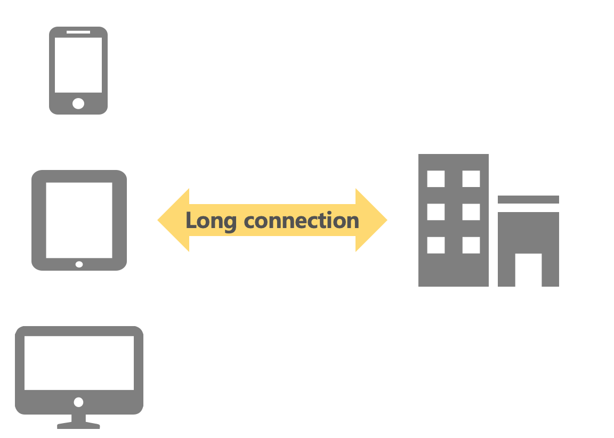

High-Performance Go Service Architecture for Millions of Connections at Baidu
1 introductuon
In the mobile internet era, the demand for real-time and interactive services has surged, making long connection services essential for applications. Unlike short connections, which follow a request-response model, long connections keep a network data channel open between the application and the server for continuous, full-duplex data transmission, allowing the server to push data to users in real-time.
Long connection services must achieve low latency, high concurrency, and high stability, which can be challenging and costly if each business maintains its own service. Therefore, the unified long connection project aims to provide a comprehensive solution, offering secure, high-concurrency, low-latency, easy-to-integrate, and cost-effective long connection services for various businesses.
2 Unified Long Connection Service
The primary goal of the unified long connection service is to offer businesses a secure, high-concurrency, low-latency, easily integrable, and cost-effective long connection system. Key objectives include:
- Supporting major Baidu app scenarios such as live streaming, messaging, PUSH, and cloud control with secure long connection capabilities.
- Ensuring high concurrency, stability, and low latency, maintaining the system’s professionalism and advanced nature.
- Enabling multiple business long connection reuse, reducing the cost and burden of establishing and maintaining connections.
- Providing a straightforward integration process with clear external interfaces for quick business integration.

3 Challenges
To build a long connection service that meets business needs, the unified long connection service faces several challenges during its design, development, and maintenance. These challenges primarily fall into two categories:
3.1 Functionality Implementation
The main challenge in designing a long connection service is defining clear boundaries between the unified service and individual business integrations. Unlike dedicated services for specific businesses, the unified service must support multiple businesses sharing a single long connection. This requires accommodating various business requirements and scenarios while avoiding excessive business logic in the unified service to ensure scalability and future development.
Typical business requirements for long connection services include:
- Establishing, maintaining, and managing connections.
- Forwarding upstream requests.
- Pushing downstream data.
During data transmission, the service must support different data protocols and push models depending on the business type:
- Messaging: Private messages and small group chats (500-1000 members),
primarily using unicast and batch unicast push modes with varying push frequency and concurrency.- Live Streaming: Multicast to millions of viewers with high push frequency.
- cloud control: Sending messages to fixed groups in batch unicast mode
- PUSH Notifications: Sending messages to fixed groups in batch unicast mode with lower push frequency.
| business | push scenarios | push ups | frequency |
|---|---|---|---|
| Messaging | unicast / batch unicast | 10K level | high |
| live stream | group cast | 10M level | high |
| cloud control | batch cast | 1M level | low |
| push | batch cast | 1M level | low |
Consequently, the unified long connection service must provide the following capabilities:
- Connection establishment, maintenance, and management.
- Upstream and downstream data forwarding, accommodating different business data protocols.
- Downstream push, supporting unicast, batch unicast, and broadcast.

3.2 Performance Optimization
The unified long connection service must achieve high concurrency, high availability, and high stability to serve Baidu’s apps. Specific performance aspects include:
| performance | standard | desc |
|---|---|---|
| concurrent connections | 10M level | horizontal scaling |
| upstream qps | 1M Level | horizontal scaling |
| downstream qps | 10M Level | horizontal scaling |
| latency | 10ms level |
3.2.1 Connection QPS, latency, and success rate
Long connections need to be established quickly when the app opens and maintained while the app is active. The service must support thousands of QPS for connection establishment and millions of concurrent online connections, with horizontal scaling capabilities. Connection establishment is fundamental, with success rate and latency being critical.
3.2.2 Upstream request QPS, latency, and success rate:
Once the connection is established, business requests need to be forwarded to the backend, supporting at least tens to hundreds of thousands of QPS, with horizontal scaling.
3.2.3 Downstream request QPS, latency, and success rate:
Depending on the business scenario, downstream requests may involve batch unicast or multicast. Generally, batch unicast should support millions of UPS, and multicast should support tens of millions of UPS, with horizontal scaling.
4.1 Overall Architecture

4.1.1 Architecture
The long connection service consists of four main components: the Unified Long Connection SDK, the Control Layer, the Access Layer, and the Route Layer.
Unified Long Connection SDK:
- Connects the business SDK to the long connection server.
- Requests tokens for device authentication, long connection access points, and protocols from the control layer.
- Establishes and maintains long connections with the access layer, triggering reconnections if the connection is unstable.
- Forwards requests from various business SDKs to the long connection service.
- Receives data from the long connection server and forwards it to the appropriate business SDK.
Control Layer:
- Verifies device legitimacy and determines access strategies before connection establishment.
- Generates and verifies tokens for device authentication.
- Assigns access points based on client properties.
- Manages small traffic control strategies.
Access Layer:
- Peer Communication: Establishes, maintains, and releases long connections with the SDK.
- Connection Management: Manages connections and maps connection IDs to connection information.
- Group Management: Manages connection groups and maps group IDs to connection information.
- Upstream Forwarding: Forwards business requests to the backend and returns responses to the SDK.
- Downstream Pushing: Receives push requests and sends them to the corresponding SDK.
Route Layer:
- Maps device identifiers to connection identifiers.
- Allows querying of connection identifiers based on device identifiers for targeted pushing.
4.1.1 Core Processes

4.3 State Management
4.4 Multi-protocolSupport

4.5 Performance Optimization
4.6 Service Deployment
Chinese version
https://mp.weixin.qq.com/s/E8rO4uBkFpcLAb_LsBOphw